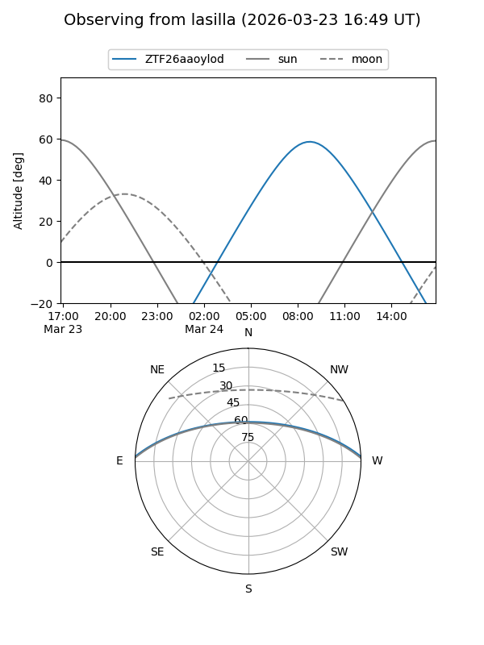
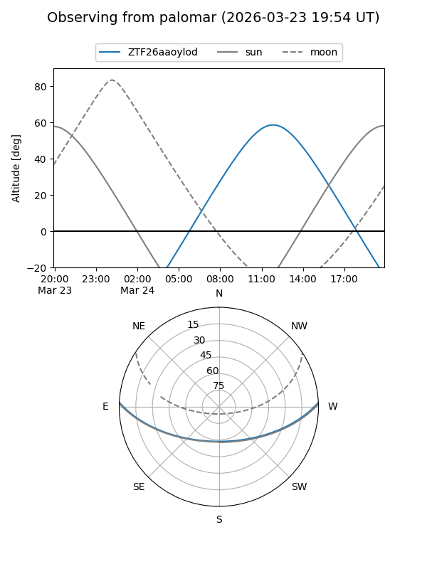

ZTF26aaoylod
Target ZTF26aaoylod at 2026-03-23 12:29
Aliases and brokers:
FINK: link
Lasair: link
ALeRCE: link
alt names
ZTF26aaoylod (ztf,fink_ztf)
Coordinates:
equatorial (ra, dec) = 242.2865,+2.16064
equatorial (HMS+DMS) = 16:09:08.75,+02:09:38.31
galactic (l, b) = (13.8337,+36.55846)
Flags:
Photometry:
last ztfg=17.44
1 ztfg detections
Lightcurve
Visibility


Additional plots